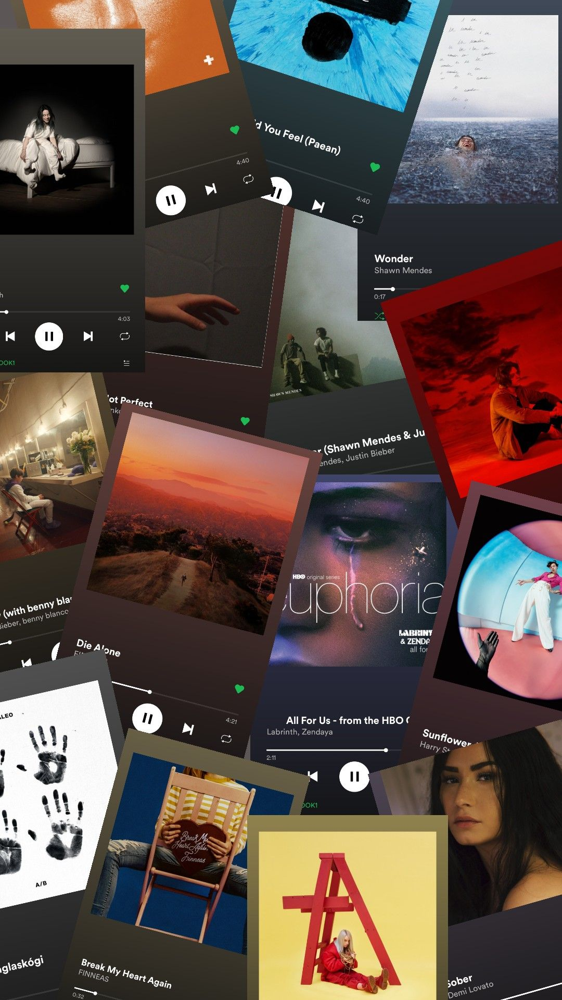
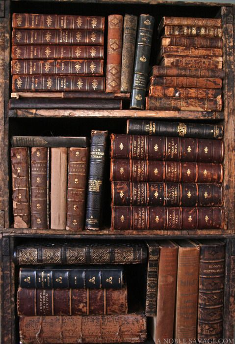
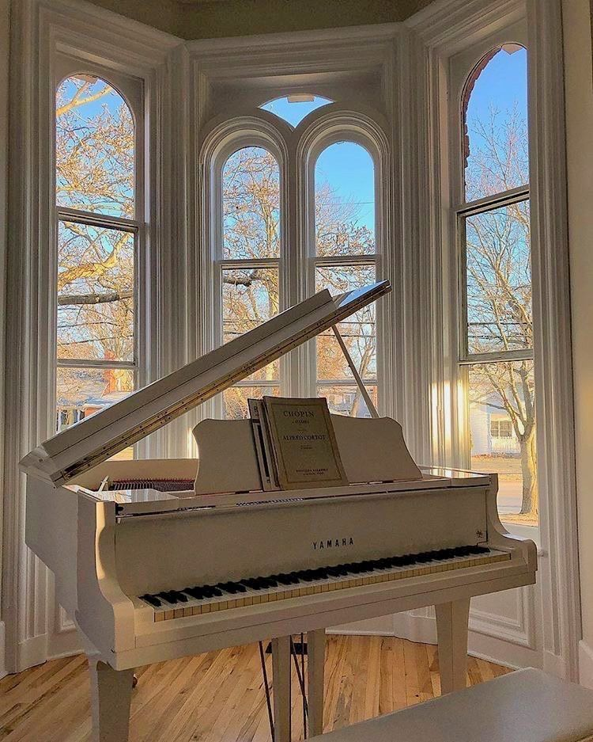
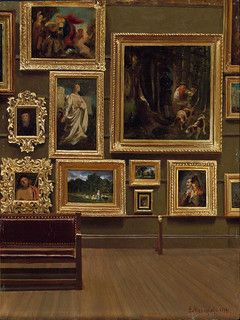
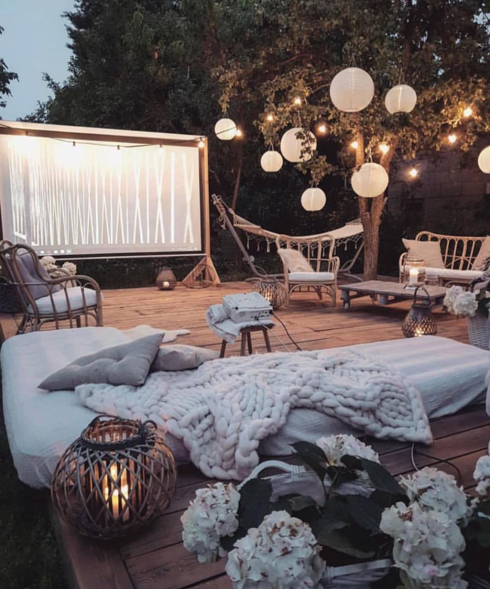

Projet
Mon objectif est de continuer mes études jusqu'à un bac+5, passer par une licence à l'étranger ou faire un master à l'étranger me permettrai d'avoir un diplôme plus reconnu dans le monde de l'international mais aussi d'augmenter mes expériences.
Ce qui m'amène à postuler en RT
Comme vous avez pu le voir l'informatique me passionne depuis petite.
J'ai décidé de postuler dans cette formation pour pouvoir augmenter mes connaissances et mes compétences dans ce domaine afin d'améliorer le monde de demain.
Mes passions
Voici quelques images qui peuvent me decrire mieux que des mots





I have two passions , like the piano. I started playing piano this summer, I don't take lessons, I just learn alone.
The other passion is reading. I love reading because this allows me to discover different point of view about the style of writing.
I have 2 book in reading, like “It’s start with us” and “ La nuit où les étoiles se sont éteintes”
(If you want look the resume you can click on the picture)